★일상사진보기★
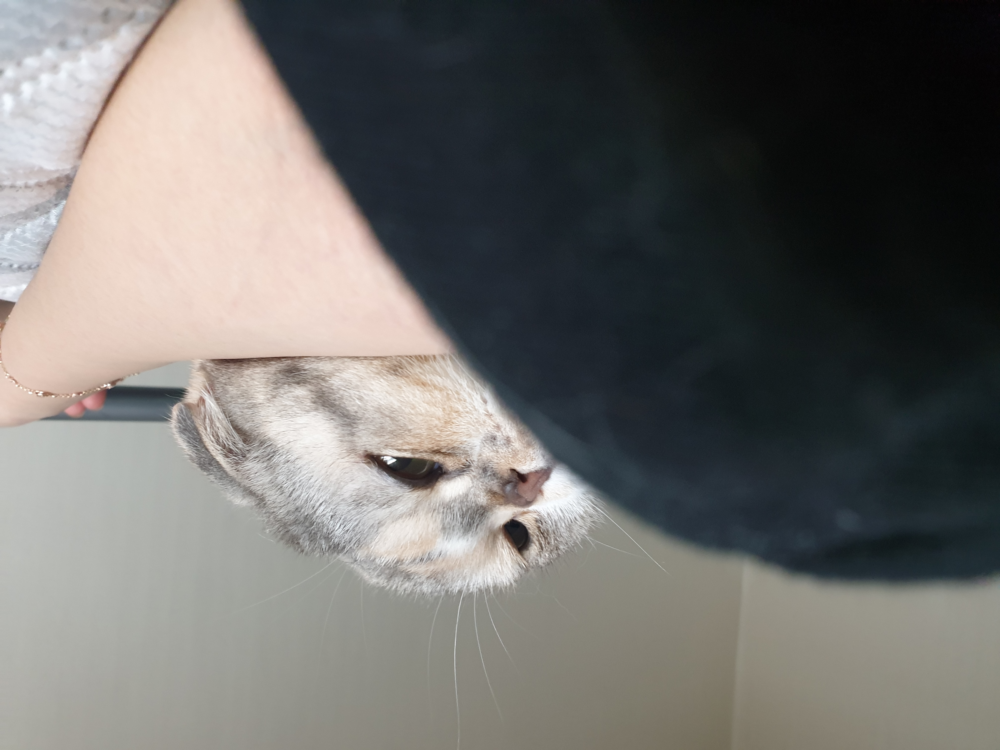
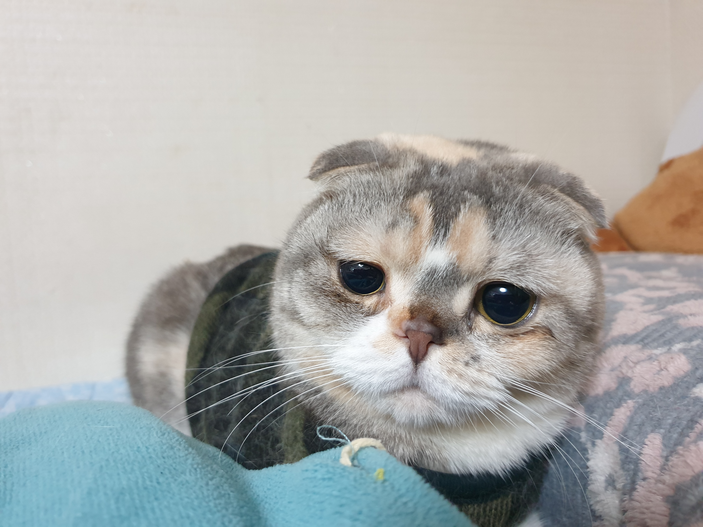
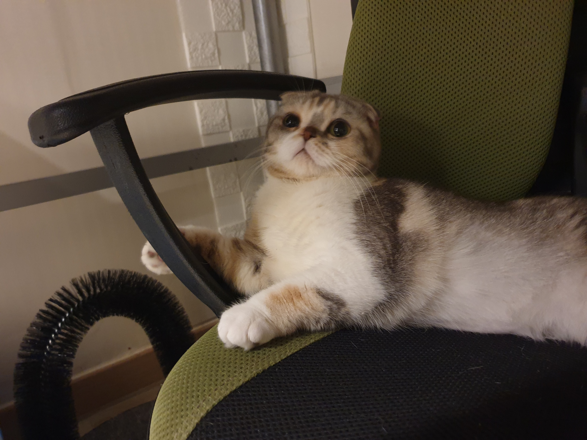
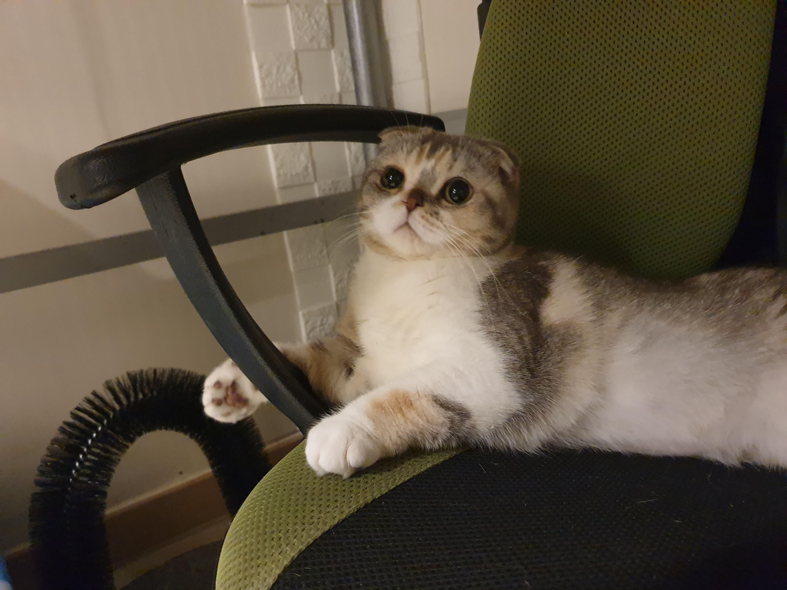
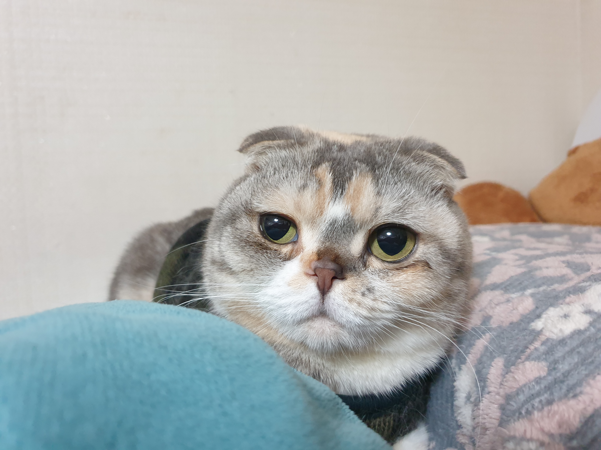
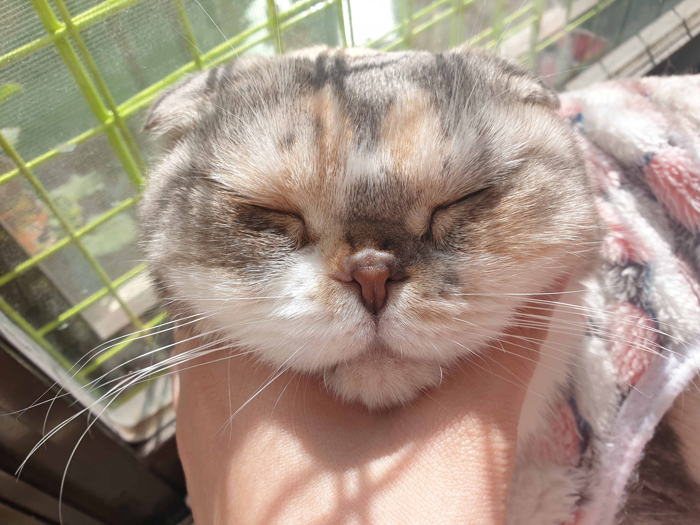

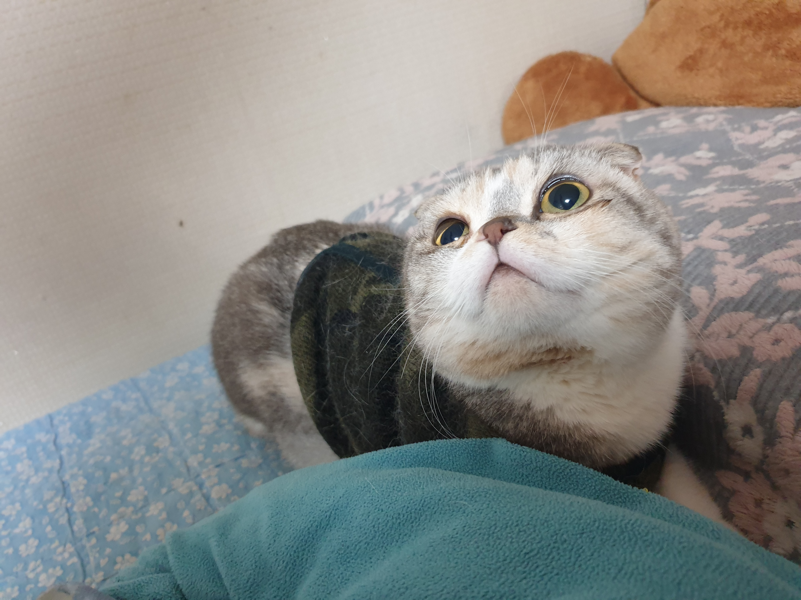
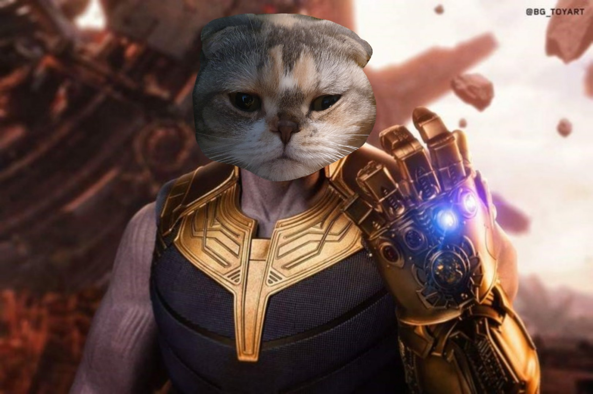
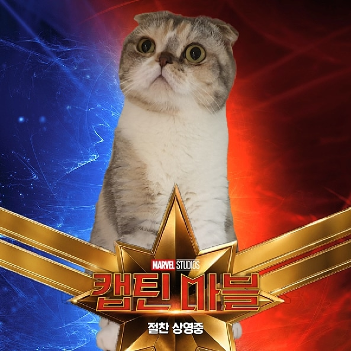
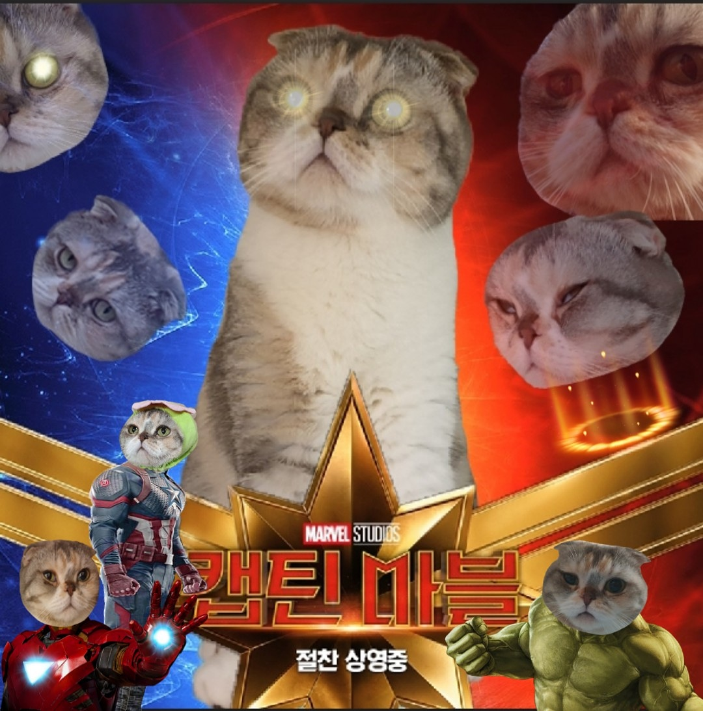
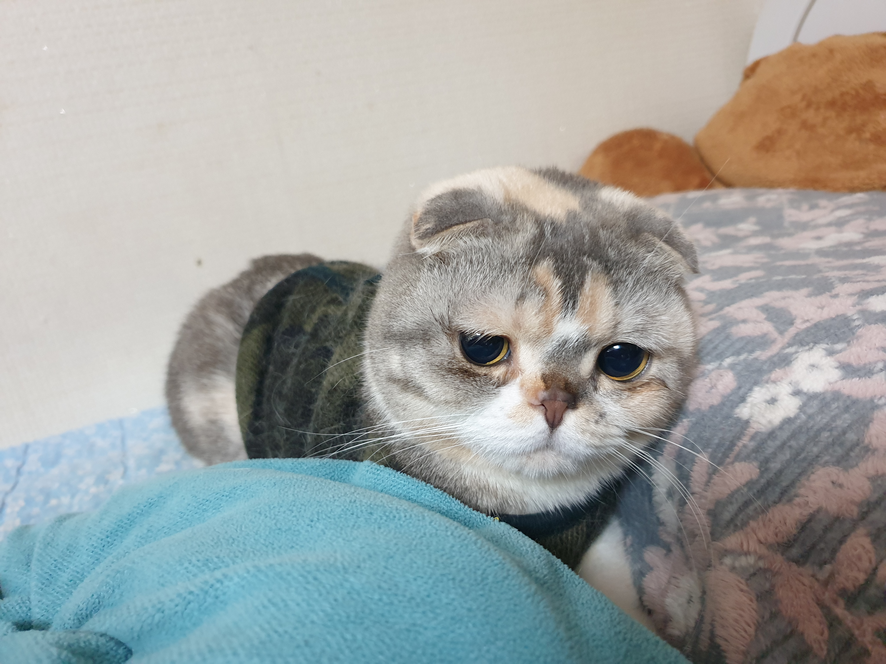
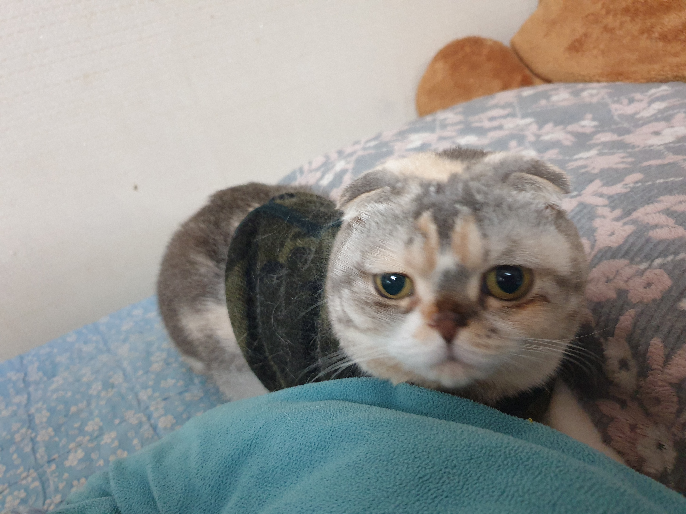
간단하게 여러장 올려보게 되었는데 살짝 겹쳐 보이는게 있는 거 같기도 하지만 모두 다 다른 사진이랍니다 모찌를 보면 볼수록 정말 스코티쉬폴드 라는 품종의 고양이에게 여러가지 매력을 느끼게 되는거 같아요 집사의 경우에는 아직까지 모찌 한마리만을 키우고 있는 중이지만 여유가 되고 기회가 된다면 다른 냥이도 가족으로 맞이 하고 싶답니다 그떄는 물론 조금 못생겼더라도 하더라도 이렇게 유전병이 발생할 수 있는 품종을 분양 하는 것 보다는 아주 건강한 녀석으로 데려올거랍니다 처음에는 고양이 유전병이 있는줄도 몰랐는데 나중에 되어서야 이런저런 알아보니까 있다는 걸 알게 되었거든요 가끔은 모찌가 폴드 라는 품종이 아니면 좋겠다 라고 생각을 하거든요 귀가 어떻든지, 집사는 모찌 그 자체를 사랑하니까요 쓸데 없는 말이 길었네요 다들 모찌의 귀염 귀염함을 보고 힐링 해보셨길 바랍니다
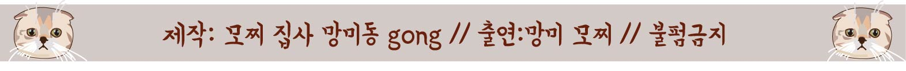